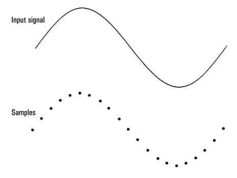
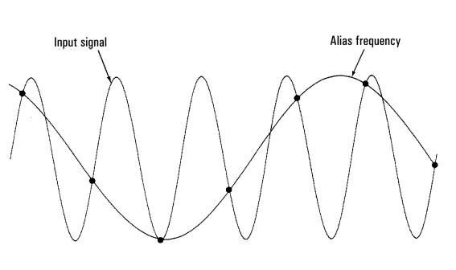
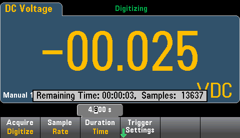

Digitizing Measurements
The digitize mode applies only to the 34465A/70A with the DIG option, and as is available only from the DMM's front panel. The digitized mode provides a front–panel user interface that allows you to quickly set up digitized measurements.
Digitizing is the process of converting a continuous analog signal, such as a sine wave, into a series of discrete samples (readings). The figure below shows the result of digitizing a sine wave. This chapter discusses the various ways to digitize signals. The importance of the sampling rate, and how to use level triggering.

The Sampling Rate
The Nyquist or Sampling Theorem states: If a continuous, bandwidth-limited signal contains no frequency components higher than F, then the original signal can be recovered without distortion (aliasing) if it is sampled at a rate that is greater than 2F samples per second.
In practice, the multimeter’s sampling rate must be greater than twice the highest frequency component of the signal being measured. From the front panel you can select a sample rate in samples per second using the Sample Rate softkey. You can also set the sample rate indirectly by specifying the sample interval (the time from the beginning of one sample to the beginning of the next sample) using the Sample Interval softkey.
The figure below shows a sine wave sampled at a rate slightly less than 2F. As shown by the dashed line, the result is an alias frequency which is much different than the frequency of the signal being measured. Some digitizers have a built-in anti-aliasing low-pass filter with a sharp cutoff at a frequency equal to l/2 the digitizer’s sampling rate. This limits the bandwidth of the input signal so that aliasing cannot occur. Since the multimeter has a variable sample rate for DCV digitizing, and to preserve the upper bandwidth for high-frequency measurements, no anti-aliasing filter is provided in the multimeter. If you are concerned about aliasing, you should add an external anti-aliasing filter.

Some digitizers have a built-in anti-aliasing low-pass filter with a sharp cutoff at a frequency equal to l/2 the digitizer’s sampling rate. This limits the bandwidth of the input signal so that aliasing cannot occur. Since the multimeter has a variable sample rate for DCV digitizing, and to preserve the upper bandwidth for high-frequency measurements, no anti-aliasing filter is provided in the multimeter. If you are concerned about aliasing, you should add an external anti-aliasing filter.
Level Triggering
When digitizing, it is important to begin sampling at some defined point on the input signal such as when the signal crosses zero volts or when it reaches the midpoint of its positive or negative peak amplitude. Level triggering allows you to specify when (with respect to voltage and slope) to begin sampling. Refer to Level Triggering for more information.
About Digitize Mode
- Digitizing is available only for the 34465A/70A and requires the DIG option.
-
Digitizing allows you to take samples of the input signal, at a specified Sample Rate (for example, 50 kHz) or Sample Interval (for example, 20 µS). You can specify the Duration as either an amount of Time or a number of Readings (samples). You can use either auto, external, or level triggering. After pressing [Acquire], press Acquire > Digitize. You can then select the digitizing/triggering parameters. After configuring the digitizing parameters, press [Run/Stop]. Digitizing will begin when the specified trigger event occurs.
- Digitize mode is available only from the front panel and can only be used for DCV or DCI measurement functions.
- When you specify digitizing settings that conflict with present settings, the instrument displays a message, and in most cases, adjusts settings to legal values. For example, if you configure digitizing for a greater sample rate than can be achieved with the present integration time (NPLC setting), the instrument displays a message and reduces the integration time. When you see a displayed message, such as NPLC setting reduced to achieve digitize rate/interval, you can press Shift > Help > 1 View the last message displayed > Select to view more information.
- The DIG option increases the maximum reading rates from 5k readings/s (standard) to 50k readings/s (maximum).
- The DIG option enables pretriggering, level triggering, and trigger delay capability.
- With the DIG option, level triggering, pretriggering, and sample timer capabilities are enabled when using the DMM from remote. From the front panel, level trigger is available for digitizing and for certain measurement functions in continuous mode (see Level Triggering for more information). Pretrigger front panel controls are only available in the digitize mode. The sample timer controls are available from the front panel for all measurement modes.
- For pretrigger, if a trigger comes before all pretriggers are received, trigger is executed to begin readings.
- While digitizing, •Digitizing flashes near the top of the display. When stopped, Digitize Stopped is displayed. While digitizing, the remaining time and remaining samples are displayed near the bottom of the display.

- All samples taken during digitizing are saved in volatile memory. After completing a digitize operation, press the Save Readings softkey and specify a file to save the digitized readings to a file.
- The maximum number of readings that can be captured is based on volatile memory space available.
- Reading store is cleared at the start of a new acquisition.
- The slowest sample rate for digitizing is 20 ms (1 PLC); the fastest is 20 µs (.001 PLC).
- Any display mode can be set to view data during acquisition but responsiveness to data views may not respond until data acquisition is complete. After acquisition is complete – trend chart pan, zoom, and cursors can be used to review data.
- Statistics and histogram data are calculated after the digitizing is completed.